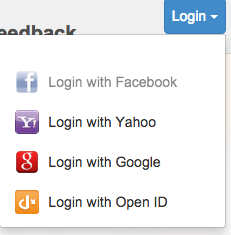
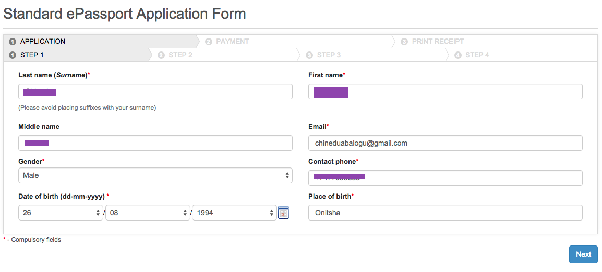
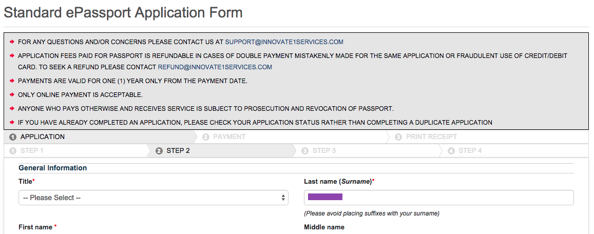
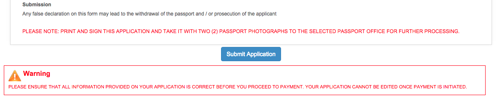
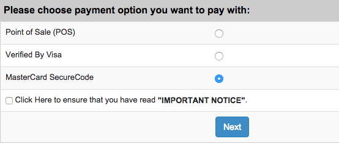
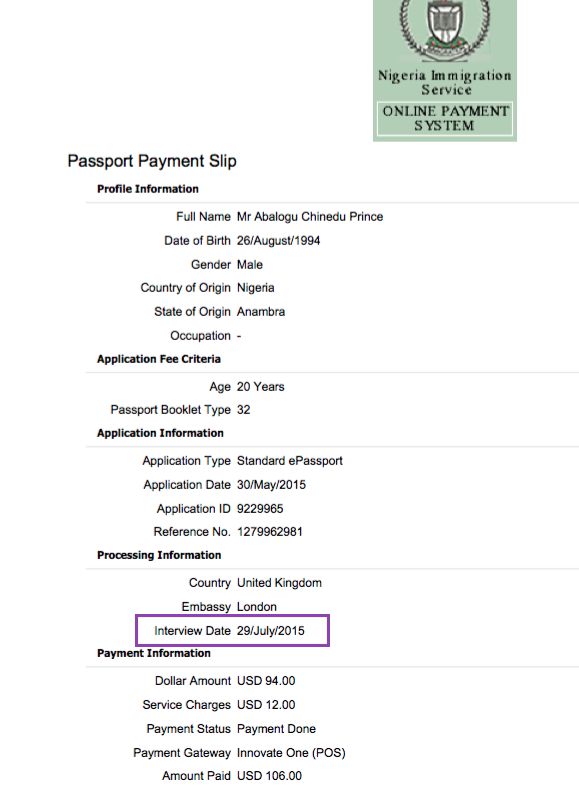
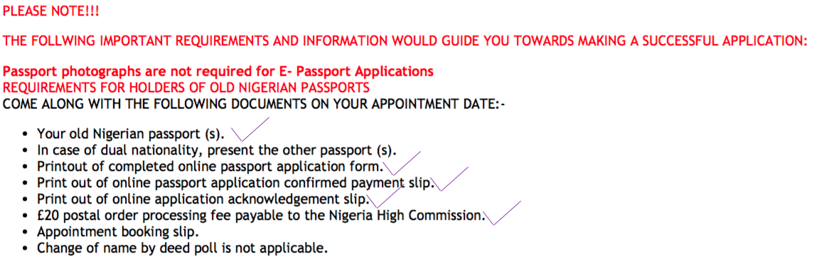
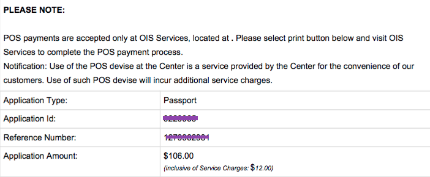

First Step
Paying for your Application
- Go to Passport renewal portal
- Click on "ePassport"
- Select your passport type: either Standard or Official ePassport
- Select your processing country: United Kingdom and read the instructions carefully before starting application
- When you click on "Start Application" you are redirected to Innovate Services website, where you will be asked to log in with either "Facebook" "Google" "Yahoo" or "OpenID"

- Fill in the application form provided.
Online application form looks like this: 


- Next you will be given an application ID and a reference number with your completely filled out application form, which you will have to print out.
- After filling your application form you'll be asked to pay $106.00, with either (POS) Point of Sale, Visa Card or a Master Card.

- If your online transaction does not work go to Step 2. If your transaction goes through you will be given a Payment slip and Acknowledgement slip , which you will have to print out and take to the embassy to hand in.
- Your Interview date will be provided in your payment slip as illustrated below:

- List of document requirements I used for my successful application: now move to Step 3.

Second Step
Follow these steps if your online transaction doesn't go through
- First off if your online transaction doesn't go through you'll have to choose "POS (Point of sale)" as your payment method
- You will get a slip that looks like the image below and print it out

- Note that you will have to go to the OIS Service's office in london to make the application payment not the Nigerian Embassy. The OIS services office's address is in this link: 56-57 Fleet street
- You don't have to book an appointment. just go there with your POS slip and pay (note: strictly card payments. No cash allowed)
- And that's it you're done with application payment.
- Your Interview date will be provided in your payment slip as illustrated below:
Third Step
Going for your Interview
- Make sure you have these documents before going for your interview date: highlighted purple color are the ones I had before going for my interview.
- Your Old Nigeria Passport.
- Print out of complete online passport application form.
- Print out of online passport application confirmed payment slip.
- Print out of online application acknowledgement slip.
- £20 postal order processing fee payable to the Nigerian High Commission.
- Appointment booking slip.
- Change of name by deed poll is not applicable.
- Your interview is in the Nigerian Embassy in london "9 Northumberland Ave, London WC2N 5BX"
- When you get there you will be given a number and you will have to seat and wait for your turn and that is pretty much everything
- NOTE: IF YOU WANT YOUR PASSPORT TO BE RETURNED TO YOU BY POST, YOU WILL HAVE TO BUY A "Special Devlivery Bag" FROM THE POST OFFICE
- It will take roughly 10 days for your new passport to be ready for collection.
- Also smile and be friendly when you get there. It will make the workers frustrated and not have anyone to pick on for not having the right information about the process.
- Also share to save a life from unnecessary stress. and ask me anything if youre stuck! :)
- Thank You and if this helped, you can chose to donate :)